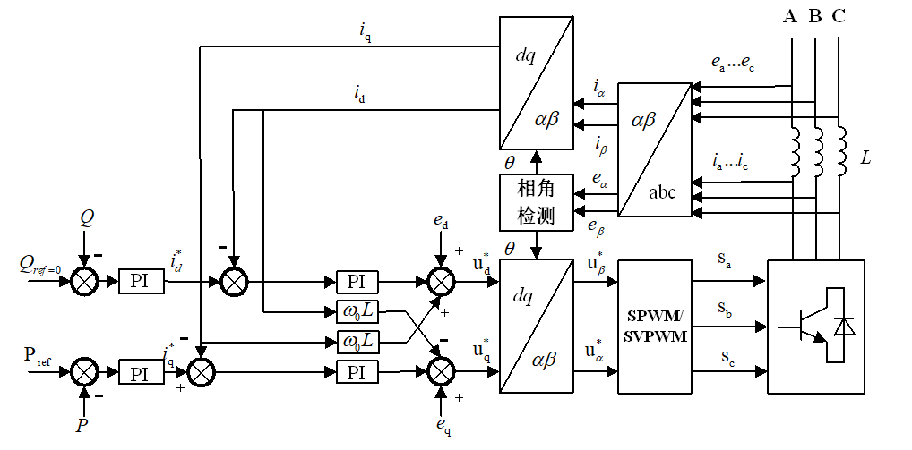
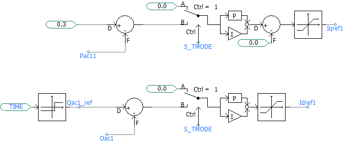
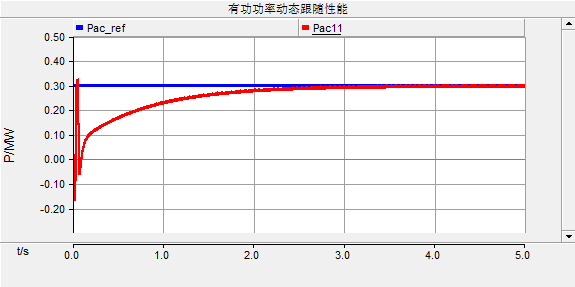
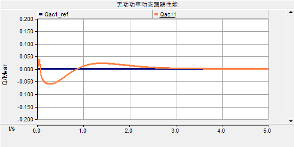
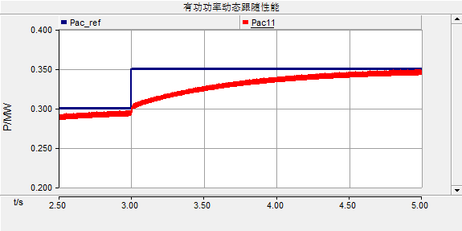

问题背景Problem Context
光伏发电系统需要通过并网逆变器把直流侧能量转换成满足电网电压、频率和电能质量要求的交流电。对于分布式光伏和光储系统，逆变器不仅承担能量转换功能，还需要控制有功功率输出、处理无功功率需求，并保持并网电流与电网条件协调。 PV systems require grid-connected inverters to convert DC-side energy into AC power that meets grid voltage, frequency and power-quality requirements. In distributed PV and PV-storage systems, the inverter also needs to regulate active power, handle reactive-power requirements and coordinate grid current with network conditions.
项目定位Project Positioning
- 本科毕业设计中的学术工程仿真项目，聚焦光伏并网逆变器建模与控制策略。Academic engineering simulation project from an undergraduate thesis, focused on PV inverter modelling and control strategy.
- 适用于展示新能源并网、电力电子仿真、分布式能源系统分析和工程技术支持相关能力。Relevant to renewable grid connection, power-electronics simulation, distributed-energy analysis and technical support roles.
- 项目产出包括技术论文、展示文档、PSCAD 工程文件、控制模型图和仿真曲线。Project outputs include a technical thesis, presentation document, PSCAD project files, control model figures and simulation curves.
技术流程Technical Workflow
| 阶段一Stage 1 | 建立系统结构与数学模型。输入三相 PWM 电压型逆变器结构、并网电压条件、滤波电感、电网电压和直流侧输入假设；基于 KVL/KCL 建立 abc 坐标系模型，并通过 Clark 和 Park 变换转到 αβ 与 dq 坐标系。 System setup and mathematical modelling. The abc-frame model was developed from the three-phase PWM voltage-source inverter structure, grid conditions and filter assumptions, then transformed into αβ and dq frames using Clark and Park transformations. |
|---|---|
| 阶段二Stage 2 | 设计功率控制策略。基于 dq 坐标系模型和瞬时有功、无功功率关系，采用电网电压定向控制和 PQ 控制，将功率控制转化为 q 轴和 d 轴电流控制。 Power-control strategy design. Based on the dq-frame model and instantaneous active/reactive power relationships, grid-voltage-oriented PQ control was used to map power control into q-axis and d-axis current control. |
| 阶段三Stage 3 | 搭建 PSCAD 仿真模型。将主电路、坐标变换模块、功率外环、电流内环和 SPWM 调制模块组合为完整仿真系统，并配置 380V、50Hz、0.5MVA、1mH、25μF、780V 和 0.3MW 等工况参数。 PSCAD simulation model construction. The main circuit, coordinate transformation, power outer loop, current inner loop and SPWM modulation blocks were combined into one simulation system with 380V, 50Hz, 0.5MVA, 1mH, 25μF, 780V and 0.3MW settings. |
| 阶段四Stage 4 | 分析仿真结果。比较参考值与实际输出曲线，观察 0.3MW 有功功率、0MVar 无功功率、dq 轴电流以及 3s 时从 0.3MW 到 0.35MW 阶跃变化下的动态响应。 Simulation result interpretation. Reference and actual output curves were compared for 0.3MW active power, 0MVar reactive power, dq-axis current tracking and a 3s step change from 0.3MW to 0.35MW. |
技术工作Technical Contribution
- 建立三相 PWM 电压型并网逆变器在 abc、αβ 和 dq 坐标系下的数学模型，用于分析电流耦合关系和控制变量转换。Built mathematical models of the three-phase PWM voltage-source inverter in abc, αβ and dq frames to analyse current coupling and control-variable transformation.
- 基于电网电压定向控制设计 PQ 控制框架，将有功和无功功率调节映射到 q 轴和 d 轴电流控制。Designed a grid-voltage-oriented PQ control framework to map active and reactive power regulation into q-axis and d-axis current control.
- 在 PSCAD/EMTDC 中搭建包含主电路、坐标变换、功率控制、电流内环和 SPWM 调制的并网逆变器仿真模型。Built a PSCAD/EMTDC model covering the main circuit, coordinate transformation, power control, current inner loop and SPWM modulation.
- 对有功功率、无功功率和 dq 轴电流响应曲线进行比较，解释模型在稳态跟踪和阶跃变化下的控制表现。Compared active-power, reactive-power and dq-axis current response curves to interpret steady-state tracking and step-response behaviour.
工具与方法Tools and Methods
- 工具：PSCAD/EMTDC、PowerPoint、Word、数学公式推导、PSCAD 工程文件。Tools: PSCAD/EMTDC, PowerPoint, Word, mathematical derivation and PSCAD project files.
- 方法：三相 PWM 电压型逆变器建模、abc-αβ-dq 坐标变换、电网电压定向控制、PQ 控制、PI 双环控制、前馈解耦控制、SPWM 调制、电磁暂态仿真。Methods: three-phase PWM VSC modelling, abc-αβ-dq transformation, grid-voltage orientation, PQ control, PI double-loop control, feedforward decoupling, SPWM modulation and EMT simulation.
- 输出通道：有功功率、无功功率、dq 轴电流、直流侧电压和 SPWM 控制信号。Output channels: active power, reactive power, dq-axis currents, DC-side voltage and SPWM control signals.
选定输出Selected Outputs
- 光伏并网系统简化结构图，展示光伏阵列、升压电路、直流母线、并网逆变器和电网之间的连接关系。Simplified PV grid-connected system diagram showing the PV array, boost circuit, DC bus, grid-connected inverter and grid connection.
- 三相 PWM 逆变器主电路模型，包含 VSC、滤波电感、等效电阻、电容、电网侧测量量和直流侧连接。Three-phase PWM inverter main circuit including VSC, filter inductance, equivalent resistance, capacitance, grid-side measurements and DC-side connection.
- 双环控制结构图，展示功率外环、dq 电流内环、坐标变换、相角检测和 SPWM 调制之间的控制链路。Double-loop control diagram showing the power outer loop, dq current inner loop, coordinate transformation, phase detection and SPWM modulation chain.
- 有功功率动态跟随结果：参考值为 0.3MW，实际输出经过调整后趋近参考值。Active-power tracking result: the actual output approaches the 0.3MW reference after transient adjustment.
- 阶跃工况结果：有功功率参考值在 3s 从 0.3MW 变化到 0.35MW，实际输出经过短暂调整后趋近新的目标值。Step-response result: active-power reference changes from 0.3MW to 0.35MW at 3s and the output approaches the new target after a short adjustment.
项目图示Project Visuals
模型、控制结构与仿真结果 Model, Control Structure and Simulation Results
以下图示集中展示模型结构、控制链路和仿真结果，便于读者理解系统从电路建模到功率响应分析的完整过程。 The visuals below focus on model structure, control chain and simulation results, showing the workflow from circuit modelling to power-response analysis.






工程相关性Engineering Relevance
该项目与新能源并网、电力电子控制、分布式光伏接入、储能系统接口、配电网仿真和技术支持类岗位相关。项目覆盖从系统结构理解、数学建模、控制策略设计到 PSCAD 仿真分析的完整技术路径，适合展示对并网逆变器控制逻辑、仿真参数和结果解释的理解。 This project is relevant to renewable grid connection, power-electronics control, distributed PV integration, storage-system interfaces, distribution-network simulation and technical support roles. It covers system structure, mathematical modelling, control strategy design and PSCAD-based result interpretation.